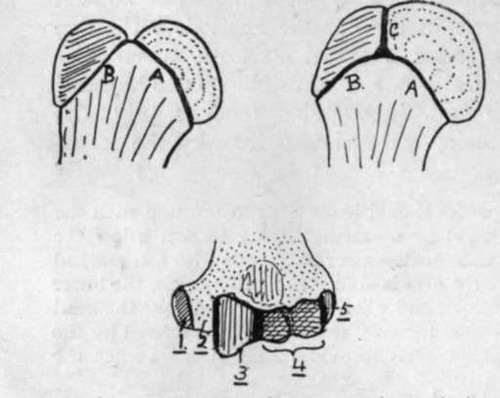
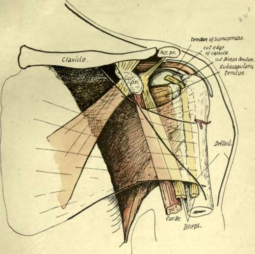
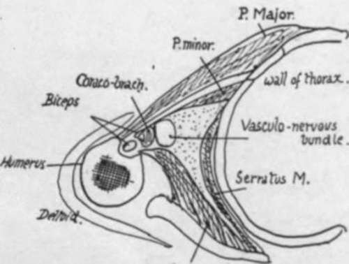
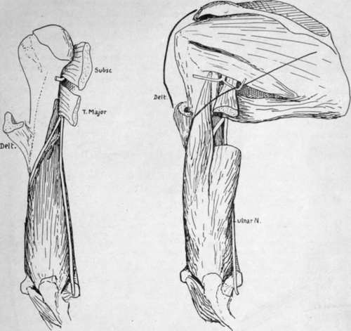

Humerus. Part 3
Description
This section is from the book "The Anatomy Of The Human Skeleton", by J. Ernest Frazer. Also available from Amazon: The anatomy of the human skeleton.
Humerus. Part 3
The compound nature of the epiphysis has led to the introduction of the term morphological neck to indicate the true junction of the head and shaft only : this (Fig. 64) corresponds with the lower half or less of the attached surface of the head centre, the upper part being that which is fused with the tuberosities. The structures attached to the epiphysis are :-■
(a) Upper two-thirds of capsule (with coraco-humeral, transverse, and upper gleno-humeral hgaments).
(b) Supraspinatus, Infraspinatus, and upper parts of insertion of Teres minor and Subscapularis : the extreme upper part of upward expansion from Pectoralis major.
The bicipital groove starts as a deeply-cut notch between the upper parts of the tuberosities, and is bridged across here by the transverse ligament. As the tuberosities fade away below, the groove becomes shallower, but is then deepened again somewhat by the increasing prominence of the outer lip that marks the area of Pectorahs major insertion, and of the inner lip, to a lessor degree, where the Teres major is attached.
The Pectoral insertion is well marked : it can be followed down into the front part of the deltoid impression, showing the connection between the two tendons. The finger can usually detect a fine secondary line running up from the pectoral marking to the front part of the great tuberosity : this indicates the hne of attachment of an upward expansion from the Pectorahs major to the capsule, and this expansion lies in front of the long tendon of the Biceps in its groove and of the short head further in, and between these it covers part cf the insertion of the Subscapularis (Fig. 65).
It is seen in the figure also that the tendon and its expansion are covered by the front part of the Deltoid. This muscle is only in the same plane as the great pectoral at its origin, becoming superficial to it as it passes down.
The long tendon of the Biceps is surrounded by a synovial covering, the bursa intertubercnlaris, derived from the joint ; this again is enclosed in a fibrous sheath thrown round it from the deep aspect of the Pectoral tendon and its upper expansion, just before they are attached to the bone, and this sheath is more or less fixed to the floor of the grove above and below the insertion of Latissimus dorsi. Thus the bursa does not come into direct relation with the bone in the groove, but is separated from it by the fibrous sheath as well as by the Latissimus dorsi and anterior circumflex artery. The roughnesses generally produced by these attachments in the floor of the groove are therefore more extensive than that due to the insertion of the tendon of Latissimus dorsi only, though this expands a little as it reaches the bone.
Fig. 64.-The uppermost figures are to illustrate schematically the meaning of the " morphological neck." In the first figure the head is joined to the shaft along the epiphysial line A., and a muscular tuberosity along the line B. ; the neck is therefore along A. This type is seen in the femur. In the second figure, however, the tuberosity has also come into relation with the head along the line C. ; it is evident that C cannot be regarded as part of the " neck," because it does not mark the junction of head with shaft, and the same remark applies to B. Hence the morphological neck is represented by A. only. This type is seen in the humerus. The lower figure shows the five different ossifications which are concerned in forming the lower end of the humerus. The dotted area is shaft, which reaches the end at 2 ; 1, 3, 4, and 5 are centres of inner condyle, trochlea, capitulum, and outer condyle respectively. Notice that the capitular centre is also responsible for the outer part of the trochlea.
Fig. 65.-Diagrammatic drawing of the relations of structures in the anterior humeral region. Pectoralis major and Deltoid are indicated as transparent, their margins showing as thick black lines, and the latter muscle is seen to lie on the former, covering in its insertion. The Pectoralis major gives an expansion upwards under cover of Deltoid, which reaches the capsule and is attached to the outer lip of the groove above the insertion of the main tendon. The two heads of Biceps and Coraco-brachialis are in the next (deeper) plane, therefore in contact with the tendon and its expansion, and the tendon of Subscapularis is immediately deep to them, so that, when the humerus is everted and the long head of Biceps carried outwards, the Subscapular tendon is " exposed " between the heads of the Biceps and is covered by the expansion-as seen in the figure. The structures which form the posterior wall of the axilla go to the bone in the neighbourhood of the inner lip, and those of the front wall reach the outer lip of the bicipital groove, and of the structures placed between them, the long tendon lies against the bone betw*een these lips, and the Coraco-brachialis forms the outer wall of the axilla.
Fig. 66.-A scheme of a section through the axilla at about a level half-way down the preceding figure. Both figures are for comparison with Figs. 51 and 63.
The tendon of Teres major has a clearly-cut marking on the inner lip, which terminates at its lower end.
The two lips of the groove mark the continuation on to the humerus of the planes of the front and back walls of the axilla. The outer wall must therefore lie between the structures going to these lips : the innermost of these intermediate tissues is the Coraco-brachialis, which thus comes to form the outer wall of the axilla (Fig. 66).

Continue to:
- prev: Humerus. Part 2
- Table of Contents
- next: Humerus. Part 4